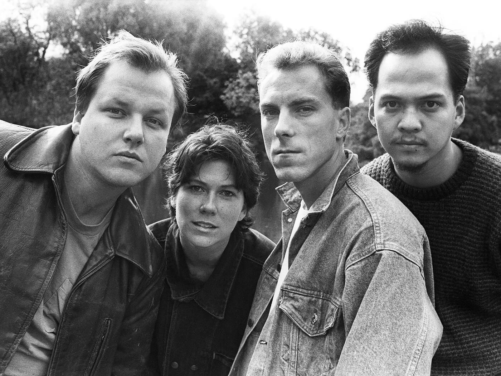

Pixies é uma banda americana de rock alternativo formada em Boston

Pixies anos 90
Sobre a banda
Pixies é uma banda americana de rock alternativo formada em Boston, Massachusetts
em 1986. O grupo separou-se em 1993 por divergências mas voltou-se a juntar em 2004. Os Pixies
encontraram pouco sucesso
no seu país de origem, algo que não se refletiu na Europa, em especial no Reino Unido (embora tenha sido)
moderado.
A sua música foi muito influenciada pelo punk e surfer rock, e embora fosse bastante melódica, também era
capaz de conter material mais pesado. Francis era o principal compositor e vocalista do grupo.
Geralmente escrevia letras enigmáticas sobre temas pouco comuns, como OVNIs e o surrealismo.
Referências a instabilidade mental, imagens bíblicas violentas, violência física e pecados são feitas em
diversas músicas.
'Perdi a vergonha de ser eu mesmo'
diz Joey Santiago, guitarrista do Pixies
Curiosidades da banda:
O nome da banda foi escolhido de forma totalmente aleatória, Joey Santiago abriu um dicionário em
qualquer página e a palavra "Pixies" apareceu diante deles.
A definição de Pixies os encantou como “pequenos duendes travessos”
Os seus primeiros 4 álbuns, Come On Pilgrim, Surfer Rosa, Doolittle e Bossanova,
obras-primas, essenciais para os conhecer.
As frases em espanhol que aparecem em muitas de suas canções são uma pequena homenagem à comunidade
hispânica, fruto de um intercâmbio estudantil que levou Francisco a morar por um tempo em San Juan,
Porto Rico.
“Your head will collapse but there’s nothing in it,
And you’ll ask yourself:
Where is my mind?”